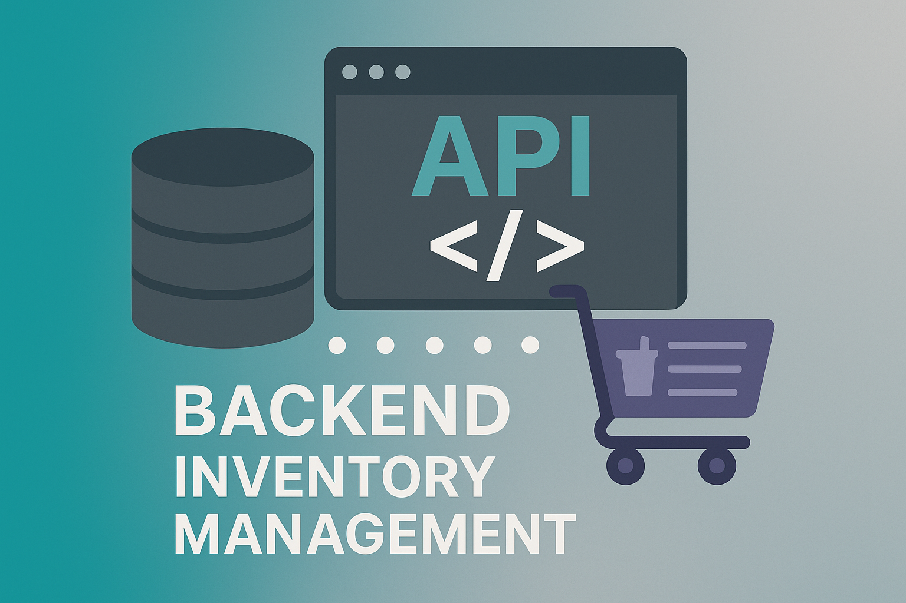
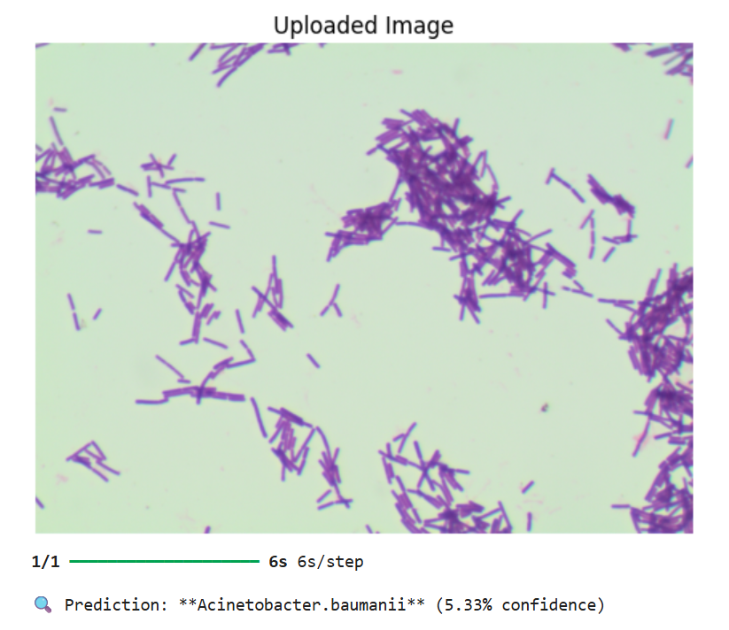

My Projects
Web-backend: Kiryana Store Management System
- Backend: Built scalable Express.js backend with JWT authentication for 500+ stores.
- Database: Designed PostgreSQL database for centralized product cataloging and store-specific inventory.
- Performance: Used Redis caching and asynchronous operations to optimize API response times.
View Project

Deep Learning Model: Bacteria Image Classification System
- Model: Developed EfficientNetB0 classifier using TensorFlow/Keras, achieving ~14.5% training accuracy.
- Preprocessing: Cleaned dataset, applied augmentation, and resized images to 224×224.
- Interface: Created Streamlit prototype for image upload and prediction.
View Project

Web-frontend: Snakey Game
- Frontend: Built with JavaScript, HTML, and CSS for a responsive single-player game.
- Features: Implemented snake movement, food collection, and score tracking.
- Mechanics: Added collision detection for engaging gameplay.
View Project
Console Game: PACMAN
- Technologies: Developed in C++ using OOP principles for Windows console.
- Gameplay: Implemented arrow key controls and BFS-based ghost AI to chase Pacman.
- Features: Added difficulty levels, score tracking, and sound effects.
View Project